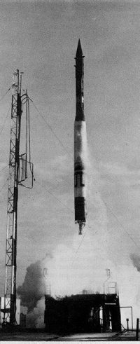

Первый старт, первая неудача
Часто предыстория оказывается гораздо интереснее самих событий. Нечто подобное можно сказать и о происшествии на мысе Канаверал, когда случилась первая в истории человечества космическая авария. Само событие охватывает каких-то несколько десятков минут. А вот на то, чтобы оно произошло, потребовались многие и многие годы.
Как я уже писал, одним из самых активных сторонников запуска искусственного спутника Земли являлся Вернер фон Браун. Но из политических соображений его не допустили к работам по упоминавшемуся уже проекту «Авангард». Немцу не оставалось ничего иного, как вести инициативные работы с минимумом затрат и ждать своего звездного часа. И он его дождался.
По иронии судьбы, очередную попытку убедить американских военных в своей правоте и добиться разрешения на работы по спутнику фон Браун предпринял вечером 4 октября 1957 года. Для этого он пригласил к себе в арсенал «Редстоун» в штате Алабама группу высокопоставленных американских военных. Был среди них и только что назначенный министром обороны Нейл МакЭлрой. И хотя он лишь готовился к приему дел от своего предшественника, фон Браун был намерен незамедлительно получить от него поддержку в своем стремлении запустить спутник. Предыдущий глава военного ведомства Чарльз Вильсон относился к этой затее отрицательно, считая, что космический полет – это никому не нужная ерунда.
На встречу с МакЭлроем фон Браун пришел нагруженный диаграммами, чертежами, проектами, а также великолепной закуской, приготовленной супругой по его собственным рецептам. Не мытьем, так катаньем, но немец был намерен добиться нужного ему решения. Он даже представить себе не мог, сколь весомый аргумент в свою поддержку получит в тот вечер.
Собеседники обсуждали проблему с запуском спутника, перемежая беседу выпивкой и едой. Нельзя сказать, что фон Брауну удалось убедить министра в своей правоте, но он увидел неподдельный интерес своего визави к обсуждаемым проблемам, и намеревался закрепить намечавшийся успех новыми весомыми аргументами. Тут-то и произошло то, что круто изменило историю американской космонавтики. В комнату, где шла беседа фон Брауна и Макилроя, вбежал директор арсенала «Редстоун» по связям с общественностью Гордон Харрис и буквально прокричал:
– Доктор Браун! Они сделали это!
Все обернулись в сторону Харриса, уже догадываясь о происшедшем, но еще веря в чудо.
– Они сделали что? – переспросил фон Браун.
– Русские. По радио только что объявили, что русские запустили спутник.
– Какое радио?
– Эн-би-си со ссылкой на бюллетень московского радио. Они принимают позывные спутника. Би-би-си тоже ловит звуковые сигналы. Только звуковые сигналы «бип-бип».
Изменившись в лице, с трудом сдерживая ярость, фон Браун повернулся к Макилрою.
– Мы знали, что они собирались это сделать. Вы знаете, что я предлагал еще кое-что, сэр.
– Вы же знаете, что мы рассчитываем на «Авангард», – оправдывался министр.
– «Авангард» никогда не сделает этого, – отчеканил фон Браун. – Сэр, когда вы получите полномочия, дайте нам свободу, и мы запустим спутник через шестьдесят дней.
Сказать, что в этот момент Вернер фон Браун был раздосадован, значит не сказать ничего. Это был крах всех его надежд, всех его устремлений. Он так мечтал быть первым! И вот, когда казалось, что жизнь налаживается, ему был нанесен столь мощный удар. Он давно мечтал о спутнике. И далеко не безосновательно. Он чувствовал, что может это сделать. Будь у него развязаны руки, первый искусственный спутник Земли появился бы уже в 1956 году. А может быть, и раньше. Но обо всем этом фон Браун мог в тот вечер думать только как об утраченных возможностях. А над Землей раздавались больно ранившие самолюбие немца сигналы «бип-бип».

«Авангард» за мгновенье перед взрывом
Американская газета «Дэйли Ньюс» написала спустя несколько дней: «Сейчас мы выглядим довольно глупо со всем нашим пропагандистским визгом, когда мы утверждали на весь мир, что русские плетутся где-то в хвосте в области научных достижений». А агентство ЮПИ добавляло: «Девяносто процентов разговоров об искусственных спутниках Земли приходилось на долю США. Как оказалось, сто процентов дела пришлось на Россию».
Специалисты, работавшие над проектом «Авангард», получили указание срочно подготовить и запустить спутник. Работа закипела и 23 октября, всего через 19 дней после того, как стартовал советский спутник, был произведен пробный суборбитальный запуск прототипа системы «Авангард», который проходил под индексом TV-2 (англ. Test Vehicle– «Пробный Носитель»). Во время этих испытаний отрабатывалась работа только первой ступени носителя. Вместо второй и третьей ступени стояли макеты. Запуск прошел успешно – ракета достигла высоты 175 километров.
Орбитальный запуск был первоначально назначен на 2 декабря, но из-за технических неполадок его несколько раз пришлось откладывать. Наконец была определена окончательная дата «американского прорыва в космос» – 6 декабря.
В тот день жители Соединенных Штатов Америки приникли к радиоприемникам. Все ведущие радиостанции вели прямой репортаж с мыса Канаверал, откуда должен был стартовать первый американский искусственный спутник Земли. Комментаторы взахлеб описывали происходившее у них на глазах историческое действо. За время передачи с космодрома слушатели узнали и как устроена ракета, и как она создавалась, и кто ее делал, и еще много другой «полезной и необходимой» информации. Америка готовилась выйти в космос. То, что двумя месяцами раньше Советский Союз уже запустил спутник, в оставшиеся до старта мгновения старались не вспоминать, чтобы не испортить атмосферу праздника.
И вот в 11 часов 44 минуты 35 секунд по местному времени высившаяся на стартовой позиции ракета-носитель «Авангард» окуталась клубами дыма, а потом как будто нехотя оторвалась от земли и начала медленный подъем. В этот момент радиослушатели в буквальном смысле оглохли от криков радости, которые журналисты выплеснули в эфир.
Но все переменилось всего через две секунды после старта. Ракета, едва оторвавшись от пусковой установки, слегка качнулась, окуталась уже не дымом, а языками пламени, и рухнула вниз. Взрыв чудовищной силы разметал куски металла по окрестным рощам. Крошечный спутник, который предполагалось вывести на орбиту, упал в заросли карликовых пальм и оттуда начал передавать сигналы, «решив», что он уже в космосе.
Эти звуки, которые мог слышать весь мир, стали похоронным маршем стремлению «догнать и перегнать Советы». Они стучали по барабанным перепонкам простых американцев и отдавались в их мозгах ощущением своей «второсортности». Комментатор Дороти Килгаллен в сердцах даже выдала в эфир: «Пусть кто-нибудь выйдет и заставит его замолчать!»
На следующий день американские газеты поместили на своих страницах множество карикатур, посвященных катастрофе «Авангарда». Как только ни называли ракету и спутник – «Капутник», «Пфутник», «Флопник», и так далее, и тому подобное. Один из высших офицеров американского флота намекал, что в происшедшей аварии чувствуется «рука Москвы». Но эта версия своего развития не получила. Для всех было ясно, что причина не в мифических происках врагов Америки, а в собственной глупости. Точнее всего о катастрофе на мысе Канаверал высказался сенатор Линдон Джонсон, будущий президент США. Он сказал, что программа «Авангард» – это «дешевая авантюра, которая закончилась одной из наиболее разрекламированных и унизительных неудач в истории Соединенных Штатов».
И все-таки «Авангард» смог «пробиться» в космос. Случилось это 17 марта 1958 года. Но к тому времени стал лишь вторым американским спутником. А первым стало детище фон Брауна «Эксплорер-1», о котором я и хочу рассказать в следующей небольшой главе.